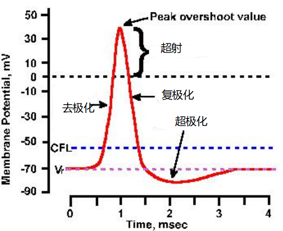
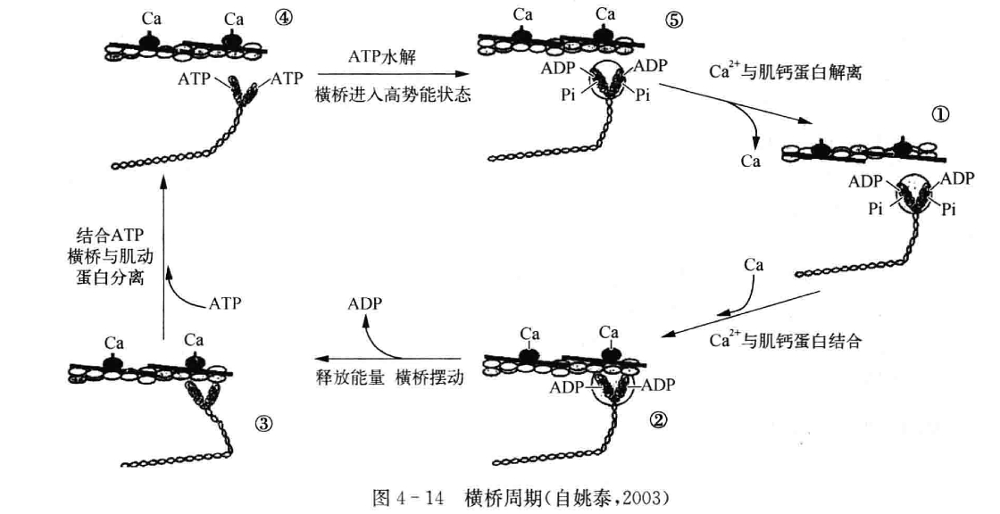
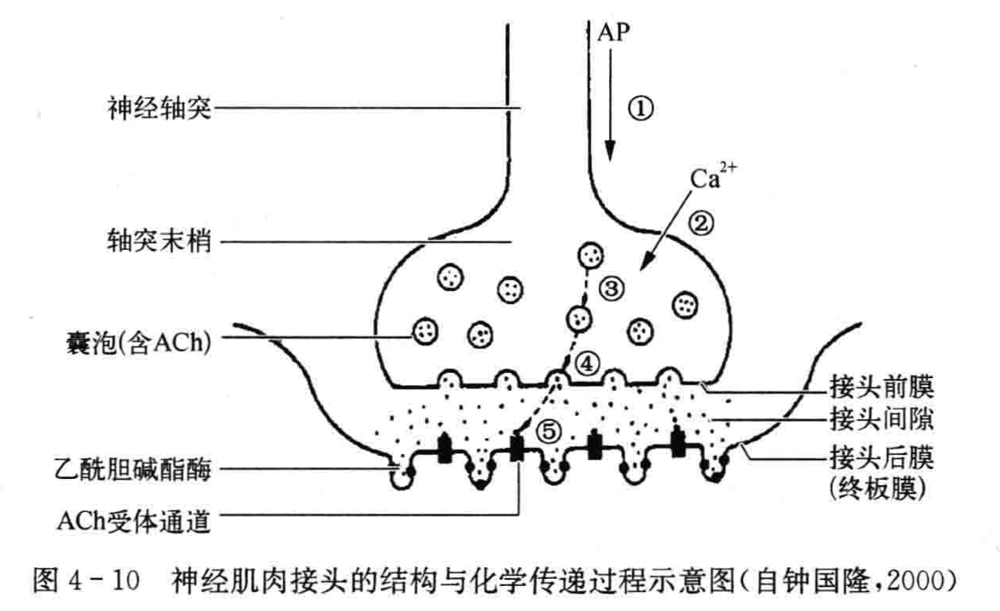

BME | Anatomy - Musculoskeletal System
Overview of the Musculoskeletal System
Components of the Musculoskeletal System: Bones, Joints, Spinal Bones
Composition of the musculoskeletal system: Bones, Bone Connections, Skeletal Muscles.
Functions of the skeleton: Provides basic body shape, supports body weight, protects vital organs.
Number of bones: Total of 206.
Classification of bones: Long bones, Short bones, Flat bones, Irregular bones.
Bone structure: Periosteum (nutritional function), Bone tissue, Bone marrow.
Chemical composition of bones: Organic matter (elasticity) + Inorganic matter (hardness), changes with age.
Categories of bone growth and development: Membranous ossification, Cartilaginous ossification.
Primary and secondary ossification centers: Primary ossification center (appears first, in the central part of the skeleton), Secondary ossification center (appears later, at both ends of bones).
Concept of bone connections: Connections between bones.
Classification of bone connections: Direct connections (with dense fibrous membrane, cartilage, bone tissue - limited movement), Indirect connections (joints - major form of connection in the body, allowing significant movement).
Basic structure of a joint: Articular surface, Joint capsule (inner and outer layers - outer: fibrous layer for fixation, inner: synovial layer for lubrication and reducing friction), Joint cavity (negative pressure inside, aiding joint stability).
Auxiliary structures of a joint: Ligaments (enhance stability), Joint discs (cushion external forces, increase stability and flexibility), Joint labrum (enlarges joint surface).
Number of vertebral bones: 7 cervical, 12 thoracic, 5 lumbar, 1 sacrum, 1 coccyx.
Physiological curvatures of the spine: 4. Cervical curve, Thoracic curve, Lumbar curve, Sacral curve. Functions: Increase volume of thoracic and pelvic cavities, shift center of gravity backward, assist in maintaining an upright posture, reduce shock to the brain during movement.
Pelvis: Composed of the hip bones, sacrum, coccyx, and bone connections. Function: Protect pelvic cavity organs.
Foot arch: Formed by tarsal and metatarsal bones in an upward arch, enhancing stability during standing, providing elasticity, cushioning the impact of walking and jumping on the body.
Skeletal muscle quantity and classification, origin and insertion points with distribution patterns, pectoralis minor muscle, important respiratory muscles
Quantity of skeletal muscles: 600+. Under conscious control, also called voluntary muscles.
Classification of skeletal muscles: Long muscles, Short muscles, Broad muscles, Circular muscles.
Origin and insertion points of skeletal muscles: Origin (relatively fixed), Insertion (relative to movement).
Distribution of skeletal muscles: Most skeletal muscles span joints, attaching to the surface of bones, distributed on both sides of the joint’s movement axis, forming two opposing muscle groups.
Pectoralis minor muscle: Unilateral contraction bends the head towards the same side, facing the opposite side; Bilateral contraction extends the head backward.
Respiratory muscles: External intercostal muscles (assist in inhalation by raising ribs), Internal intercostal muscles (assist in exhalation by lowering ribs), Pectoralis major muscle (assists in inhalation by raising ribs), Diaphragm (important respiratory muscle), Abdominal muscles (aid exhalation by force).
Resting Potential and Action Potential
Basic Concepts of Stimulation and Excitation
Stimulation: Environmental changes capable of being perceived by the organism and eliciting a response.
Response: Changes caused by stimulation, divided into excitation and inhibition.
Excitation: Reaction of living tissue producing electrical impulses due to stimulation; activity increases from weak to strong.
Inhibition: Activity decreases from strong to weak.
Threshold intensity/threshold: The minimum stimulus intensity that can evoke a response in tissues.
Absolute refractory period (no matter what), Relative refractory period (requires stronger stimulus), Supranormal period (even weaker stimulus), Subnormal period (excitability weaker than normal level).
Resting Potential and Its Generation Mechanism
Resting Potential: The potential difference existing inside and outside the cell during the cell’s resting phase.
Outside (+) Inside (-). Neuronal cells (-70mV); Skeletal and cardiac muscle cells (-90mV); Smooth muscle cells (-55mV).
Autonomic cardiac and smooth muscle cells exhibit spontaneous fluctuations in potential.
Polarization, Hyperpolarization, Depolarization
Mechanism of Resting Potential Generation:
- Uneven distribution of various ions inside and outside the cell due to the action of ion pumps on the cell membrane during the resting state. → Sodium-potassium pump causes high K+ and low Na+ inside the cell.
- Cell membrane is a selectively permeable membrane; it has different permeability to various ions in different states.
→ The cell membrane allows greater permeability to K+.
→ Efflux of K+ establishes the resting potential, which is the equilibrium potential of K+.
→ Reduction of intracellular positive charges, resulting in a positive-negative charge on the outside of the cell.
Ion basis for resting potential: Inward diffusion of K+ into the membrane.
Factors affecting resting potential: ① Concentration of K+ inside and outside the cell; ② Relative permeability of the membrane to K+ and Na+.
Generation and Conduction of Action Potential (Factors, Characteristics, Local Excitation)
Change process: Cell receives stimulus → Depolarization → Overshoot (repolarization) → Repolarization → Hyperpolarization → Afterhyperpolarization → Afterdepolarization
Fundamental cause of excitement: Activation of voltage-gated sodium channels (neuron/skeletal muscle); Activation of calcium channels (cardiac slow-response cells).
General characteristics of action potential conduction: 1) Physiological integrity; 2) Bidirectional conduction; 3) Insulative conduction; 4) “All-or-none” conduction; 5) Relative non-fatigability
Factors affecting action potential conduction velocity: Diameter of nerve fibers (thicker → faster), Myelin sheath (larger diameter, longer internodes, thicker myelin sheath → faster), Temperature (higher → faster), Age (younger → faster)

| Period | Channel Opening | Ion Changes | Potential Changes |
|---|---|---|---|
| Resting | Sodium-potassium pump; Cell membrane | K+ influx, Na+ efflux; K+ efflux | Exterior positive, interior negative, -70mV |
| Depolarization | Activation of voltage-gated sodium channels | Na+ influx | ↑ |
| Repolarization | Activation of potassium channels | K+ efflux | ↓ |
| Afterpotential | Sodium-potassium pump | Na+ efflux, K+ influx |
Conduction of action potential: Propagates along the cell membrane in a pulse-like manner without attenuation throughout the cell.
- Unmyelinated nerve fibers: Local current conduction
- Myelinated nerve fibers: Saltatory conduction (between nodes of Ranvier; myelin sheath increases conduction speed, reduces energy consumption)
Local excitation: Na+ influx causing depolarization + anodic electrotonic potential jointly form the membrane potential.
Characteristics of local excitation: 1) Does not exhibit all-or-none behavior; 2) Cannot conduct; 3) Can summate (temporally and spatially)
Why does local excitation activating sodium channels not generate an action potential? Is it between action potential and electrotonic potential?
There are many sodium channels, and local excitation only activates some of them, not reaching the threshold.
Yes, electrotonic potential: Purely potential change without channel involvement; local excitation: Potential + a few channels (not reaching threshold); action potential: Potential + most channels (reaching threshold)
Concept and Characteristics of Compound Action Potential in Nerves
Compound Action Potential: Sum of various fiber electrical activities on a nerve fiber bundle.
Characteristics
- Does not exhibit “all-or-none”: Different fibers have different excitability thresholds. With increased stimulation, more fibers get activated.
- Different fibers in the nerve trunk have different conduction velocities.
- Asymmetrical bidirectional action potentials: Due to point A not recovering, the downward action potential and upward action potential partially merge.
Excitatory Transmission at the Neuromuscular Junction (Structure, Process, Characteristics)
Structure: Presynaptic membrane (synaptic end membrane - nerve terminal cell membrane), Postsynaptic membrane (synaptic post-membrane - muscle cell membrane), Synaptic cleft (synaptic gap)
Process: (Electro-chemical-electric)
- AP reaches the nerve axon terminal, causing depolarization of the synaptic end.
- Extracellular Ca+ enters the axon terminal.
- Vesicles move toward the presynaptic membrane.
- Vesicle fuses and ruptures with the presynaptic membrane, releasing ACh.
- ACh binds with ACh receptor channels on the postsynaptic membrane to generate the endplate potential.
Endplate Potential: ACh ion channels open, allowing Na+ and K+ to flow. Represents the completion of excitation transmission at the neuromuscular junction.
Characteristics of excitation transmission at the neuromuscular junction: Unidirectional transmission, Synaptic delay, Susceptibility to environmental changes
| Tubocurarine, α-bungarotoxin | Blocks ACh receptor channels on the endplate membrane |
|---|---|
| Myasthenia gravis | Autoimmune antibodies that destroy ACh channels |
| Organophosphate pesticides | Bind to acetylcholinesterase to make it inactive** Resurrects activity of Pyridostigmine** |
Mechanism of Skeletal Muscle Contraction - Sliding Filament Theory
Mechanism: Stimulation → Cell membrane generates action potential → Excitation-contraction coupling → Sliding of muscle filaments → Contraction of entire muscle cell
Sliding Filament Theory: Contraction of skeletal muscle results from the sliding of thin filaments within a sarcomere.
Thick Filament — Myosin + Myosin-binding protein — Rods towards the M-line, forming cross-bridges, perpendicular to the main axis. Function of Cross-bridge: 1) Reversibly bind with thin filaments, pulling them towards the M-line. 2) Acts as ATPase, hydrolyzing ATP to facilitate sliding of thin filaments.
Thin Filament — Actin + Tropomyosin + Troponin (Regulatory proteins: Tropomyosin + Troponin)
Process of Skeletal Muscle Contraction - Cross-Bridge Cycle
- Cross-bridge highly affinitive to actin but unable to bind due to the complex of troponin and tropomyosin.
- Ca+ concentration rises, troponin binds to it, altering conformation, exposing actin-binding sites. Cross-bridge binds with actin.
- Cross-bridge swings, pulling thin filaments towards the M-line. Chemical energy → mechanical energy
- ADP leaves, ATP binds, cross-bridge dissociates from actin.
- Cross-bridge hydrolyzes ATP into ADP and Pi, returning to its vertical state.

Excitation-Contraction Coupling in Skeletal Muscle:
Stimulation is transmitted to the synapse through neurons. Chemical substances are released via electrochemical secretion and bind to chemical gate channels on the endplate membrane, initiating an action potential in muscle cells. Triads in the skeletal muscle cells release a large amount of Ca2+, which binds to muscle troponin on the thick filaments, exposing binding sites on thin filaments, leading to the formation of cross-bridges. ATP hydrolysis leads to sliding between thick and thin filaments, shortening the sarcomere.
Muscle Membrane Action Potential:
→ Activation of Ca channels (T-tubules), Ca release
→ Activation of Ca channels (sarcoplasmic reticulum), Ca release (Terminal Cisternae - Sarcoplasm)
→ Cross-Bridge Cycle
→ Skeletal Muscle Shortening
Basic Concepts Related to Types of Muscle Contraction:
Contraction Forms: Shortening of muscle length + increase in muscle tension
Isometric Contraction: Increase in tension, length unchanged. Cross-bridge rotation generates force but fails to induce sliding of thin filaments.
Isotonic Contraction: Shortening of length, constant tension. Muscle force > Load. Sliding of thin filaments.
Factors Influencing Muscle Contraction:
Pre-load (determines initial length), After-load (resistance to muscle contraction/work object), Muscle contraction ability (Ca2+ levels and muscle actin ATPase activity)
Review Class Content
Actions of Bones, Muscles, and Joints:
Bones (levers), Joints (pivot points for movement), Skeletal muscles (organs of movement)
Types of Muscle Cells and Excitable Muscles:
Types of muscle cells: Skeletal, Cardiac, Smooth muscles
Excitable muscles: Cardiac, Smooth muscles
Substances affecting transmission between nerves and between nerves and muscles
| Tubocurarine, α-bungarotoxin | Blocks Ach receptor channels on the endplate membrane |
|---|---|
| Myasthenia gravis | Autoimmune antibodies that destroy ACh channels |
| Organophosphate pesticides | Bind to acetylcholinesterase and render it inactive Resurrects activity of Pyridostigmine |
“The Most”
External occipital protuberance: The most prominent point on the center of the occipital bone
External occipital crest: The most protruding part of the occipital bone
Pterygoid processes: The weakest point at the junction of the frontal, parietal, temporal, and sphenoid bones, forming an H-shaped suture
Synovial joint: The most advanced form of bone connection
Latissimus dorsi: The largest flat muscle
Erector spinae: The longest and largest muscle in the back
Sarcomere: The basic unit of muscle contraction and relaxation
Post-Lecture Exercises
What structural characteristics of the entire body bones are adapted for human upright walking and labor?
- Four physiological curvatures of the spine - cushioning motion to protect the brain
- Upward protrusion of the foot arch - cushioning pressure, reducing shock
- Lightweight upper limb bones, massive lower limb bones
What structural features of the joints are adapted for firmness and flexibility?
Basic Structure: Joint surfaces reduce friction and provide cushioning to increase firmness. The outer layer of the joint capsule is fibrous, providing firmness. The inner layer is synovial, increasing flexibility. The negative pressure within the joint cavity contributes to stability.
Auxiliary Structures: Ligaments are dense connective tissue bundles that stabilize joints. The articular disc makes joint surfaces more compatible, cushions external forces, and enhances joint stability and flexibility.
What are the characteristics of auxiliary structures in skeletal muscle?
Auxiliary structures include fascia, synovial sheath, and tendons.
How many ways can bones connect?
- Direct connection: Adjacent bones are directly connected by dense connective tissue, cartilage, or bone tissue. Characteristics: Limited or no movement.
- Indirect connection: Joints. The primary connection method of bones. Characteristics: Greater range of motion.
How are nerve fiber resting potentials and action potentials formed?
Resting potential of nerve fibers: Outside positive, inside negative
Mechanism of Resting Potential Formation:
①Due to the action of ion pumps on the cell membrane, various ions are unevenly distributed inside and outside the cell at rest;
②The cell membrane is a selectively permeable membrane, with different permeabilities for various ions under different states.
Process: The resting potential is primarily achieved by K+ outflow, and the inward diffusion of K+ into the cell is the main ion basis for forming the resting potential.
Mechanism of Action Potential Formation:
The cell membrane has voltage-gated Na+ or Ca2+ channels.
Process: 1) Voltage-gated channels open, Na+ rapidly enters, causing depolarization. 2) At Na+ equilibrium potential, Na+ channels close, K+ channels open, and K+ rapidly exits, repolarizing the membrane.
How are excitations conducted in nerve fibers?
There are two methods: 1) Local current conduction on unmyelinated nerve fibers; 2) Saltatory conduction on myelinated nerve fibers.
Local current conduction on unmyelinated nerve fibers: When a point on a nerve fiber is stimulated, the action potential generates a subthreshold potential that spreads out, causing neighboring areas to reach the threshold, triggering new action potentials.
Saltatory conduction on myelinated nerve fibers: Because the myelin sheath acts as insulation, local current flow in myelinated fibers only occurs between the nodes of Ranvier, resulting in saltatory conduction of action potentials.
Why does the action potential of a nerve trunk not follow the “all-or-none” rule?
Because the compound action potential of a nerve trunk is the sum of the electrical activity of all excited nerve fibers. Due to different excitation thresholds of various fibers in the nerve trunk, only fibers with the lowest threshold are activated by the threshold stimulus. As the stimulus increases, more fibers are activated, leading to a larger compound action potential.
How is excitation transmitted at the neuromuscular junction?
- AP reaches the nerve axon terminal.
- Extracellular Ca+ enters the axon terminal.
- Vesicles move towards the presynaptic membrane.
- Vesicles fuse and rupture with the presynaptic membrane, releasing ACh.
- ACh enters the synaptic cleft and binds to ACh receptor channels on the postsynaptic membrane, generating the endplate potential.

What are the characteristics of the arrangement of cross-bridges on thick muscle filaments? How does the cross-bridge cycle during muscle filament sliding work?
Characteristics: When the muscle is at rest, the cross-bridges are perpendicular to the main axis. On the same circumference of the thick muscle filament, there are only 2 cross-bridges protruding at intervals of 180°, and at a certain distance, there is another pair of cross-bridges, but they are at a 60° angle compared to the previous pair. Each thick muscle filament is surrounded by 6 thin muscle filaments.
Cross-bridge cycle: The process of cross-bridges binding to actin, swinging, and re-binding.
Stimulation passes through neurons to synapses, and the chemically secreted substance binds to the chemical-gated channels on the endplate membrane. Muscle cells generate an action potential, triggering a large release of Ca2+ from the sarcoplasmic reticulum through the triad in skeletal muscle cells. Calcium ions bind to the troponin on the thick muscle filaments, exposing binding sites on the thin filaments. This leads to the formation of cross-bridges, hydrolysis of ATP, and sliding of thick and thin muscle filaments, causing the sarcomere to shorten from the Z-line to the M-line.
When given 40 stimuli per second to the frog’s sciatic nerve gastrocnemius muscle specimen, the muscle contracts fusedly into a complete tetanic contraction, while the action potentials of the sciatic nerve remain independent. Why is that?
Nerve fibers have relative and absolute refractory periods, whereas skeletal muscle cells do not. Therefore, at higher stimulation frequencies, the second stimulation cannot fuse due to the nerve fiber being in its refractory period, while the skeletal muscle fibers, lacking a refractory period, continue contracting continuously, causing a complete tetanic contraction.
Skeletal muscles exhibit temporal and spatial summation. This phenomenon is absent in nerve action potentials.
What factors affect skeletal muscle contraction?
External factors: Pre-load and after-load; Internal factors: Muscle contraction capability
Pre-load: The load existing on the muscle before contraction, determining the muscle’s length before contraction - initial length
After-load: The load encountered by the muscle after it begins to contract, not increasing the initial length but hindering muscle contraction
Muscle contraction capability: Depends on the levels of Ca2+ in the sarcoplasm and ATPase activity of myosin in the excitation-contraction coupling process.
Disclaimer: This blog’s content is class notes, intended for sharing purposes only. Some images and content are sourced from textbooks, teacher slides, and the internet. If there is any infringement, please contact aursus.blog@gmail.com for removal.